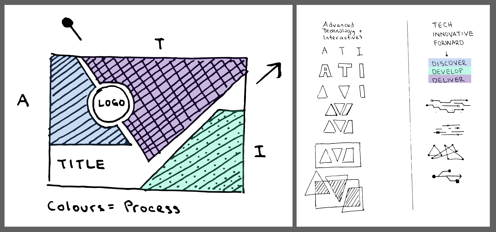

ROLE
Branding, Visual Design
TEAM
Solo Project
BRIEF
Create assets for presenting the Advanced Technology Interactives (ATI) team's work to key stakeholders.
YEAR
2016-2018
Confidentiality Notice: I am unable to disclose certain aspects of this project as it serves many products that are still under development.

THE CHALLENGE
The Advanced Technology & Interactives (ATI) Team was a small, multi-faceted group with a vast number of members deployed to various projects. I was presented with the task to create a presentation title slide and footer that could be used by any ATI Team Member when presenting their work.
A LASTING REPUTATION
My work on the initial title slide and footer assets were so well received that it made me strive to grow the resources into an overall visual brand for the team. I expanded the library of assets and templates to the point where other team members felt comfortable using them and followed the style guidelines. This elevated ATI's reputation within the company as we gained more exposure with key personnel.

process
UNDERSTANDING THE VISION
I worked closely with the team's Creative Director to grasp what his vision was for the team. This helped me to form a general look and feel. I created several iterations of layouts and color combinations before beginning on the initial slide design. I used the chosen version to refine the assets that formed the template of various presentation platforms such as PowerPoint and Keynote.
This is a higher level look at the process of creating the title slide, taking both elements of our team name and inspiration from "technology" patterns.

templates & assets
I followed up on the success of my inital title slide design by producing the following additional team-branded templates as well as a branding guideline booklet for others to reference.

DESIGN DONE WELL IS USED
After creating the ecosystem of essential templates, I also custom designed assets for formal demonstrations of our team's work. These assets included description signage, email invites, presentations, notices, and more. We sometimes accommodate over 100 Team Members through a demonstration depending on the size and number of demos that are being showcased or user tested.
My work on the ATI brand was so well received and accessible that other teammates who weren't necessarily designers were able to easily use my assets to create their own products when needed. Some of these products included stickers, thank you cards, and custom story cards made for a 2017 SXSW experience with Sony.
My brand design expertise was drawn upon more specifically to create custom presentations for ATI leadership to present to Universal Creative stakeholders. These presentations ranged from project updates, financial planning, and more. Depending on the use case, I would sometime also create custom infographics in order to best portray the information being communicated.
CONTINUED GROWTH
My work, along with a some other branding pioneers at Universal Creative, became part of a larger initiative for reimagining Universal Creative's overall brand. A year after I entered the company, I got to witness Universal Creative form it's own Branding and Communications's team and was lucky enough to take part in an early consultation panel while the group was developing how to communicate Universal Creative to the world.